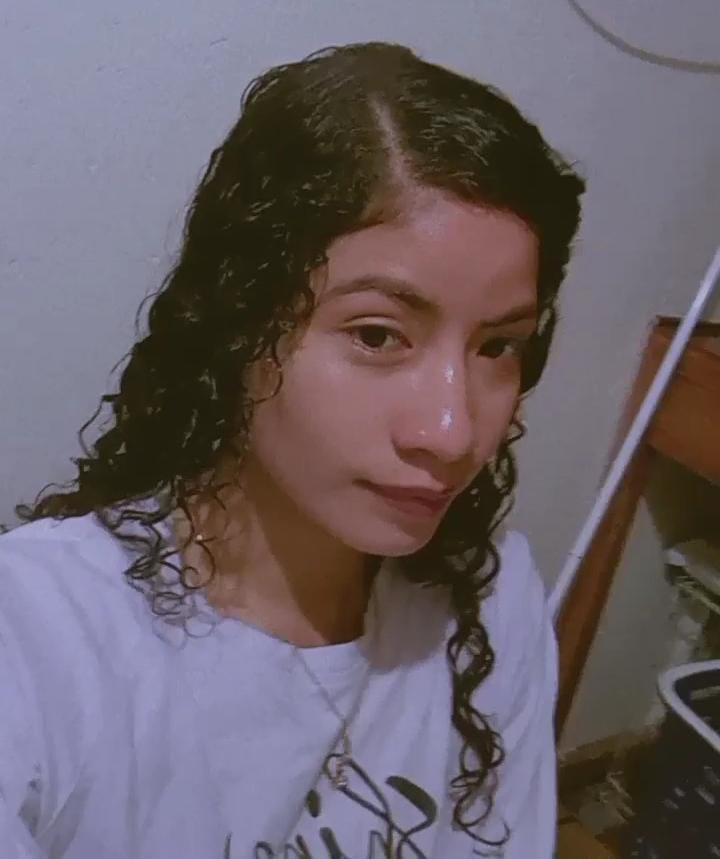

About Me
Hello! I'm Josselyn Martinez I really like cinematographic art, since I really enjoy the music, the visual effects and the talent behind each film.
I love this type of viewing, as there are times when documentaries transport me to special moments in my life.
My cinematic journey
Before, it didn't catch my attention, however, as time went by, I discovered how fascinating it can be to immerse yourself in a well-told story, connect with the characters and experience different emotions through cinema.
I don't consider watching an international documentary film festival to be a waste of time, but rather a valuable hobby that allows me to relax, be entertained, and, on many occasions, learn something new.
My favorite documentaries
Among my favorites are:
- Succession: A chilling look at the heart of a dysfunctional family in the media and entertainment empire.
- More alive than ever: It will feature filmmakers with a very lively style.
- Vourdalak: Vourdalak presents a strange family that lives in the middle of the countryside. A pale and powdery individual presents himself as an emissary of the King of France.
- L’Art du muet: It begins with a false quote from Bushido: “There is no loneliness deeper than that of the samurai". Only the tiger in the jungle can compare with it.
Contact
If you have any questions, comments, or suggestions, feel free to contact me through the following form: